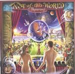

| Artist: | Pendragon |
| Title: | Not Of This World |
| Label: | Toff Records PEND10CD |
| Length(s): | 76 minutes |
| Year(s) of release: | 20001 |
| Month of review: | [07/2001] |
| 1) | If I Were The Wind (and You Were The Rain) | 9.23 |
| 2) | Dance Of The Seven Veils (part 1): Faithless | 4.09 |
| 3) | Dance Of The Seven Veils (part 2): All Over Now | 7.30 |
| 4) | Not Of This World (part 1): Not Of This World | 7.20 |
| 5) | Not Of This World (part 2): Give It To Me | 2.23 |
| 6) | Not Of This World (part 3): Green Eyed Angel | 6.40 |
| 7) | A Man Of Nomadic Traits | 11.43 |
| 8) | World's End (part 1): The Lost Children | 10.46 |
| 9) | World's End (part 2): And Finally... | 7.13 |
| 10) | Paintbox Acoustic Version (bonus) | 4.25 |
| 11) | King Of The Castle Acoustic Version (bonus) | 4.44 |
Dance Of The Seven Veils is two parted. The first part has a warped guitar sound and a low zooming bass. The opening vocal part is not that distinctive, but the choral chorus is much so. It also reminds me of the chorus of the previous track. Then we get some pace in the track, as we move into the second part. This is a rather catchy passage really, but the song soon takes a step back with moody and melodic acoustic guitar. Late in the track we step back to The World with some variations on the melodies from that album. A very full sound at the end here.
The first part of Not OF This World really breaks out loud with strong keyboards and pacey guitars all with strong melodic content. The guitar playing gets particularly fast along the way, I think no track of Pendragon has been that fired up. Very orchestral and effective. In comparison with the previous tracks, this song sounds less like similar to previous albums of Pendragon, although part of it (the mortal coil verse) comes right out of the Seven Veils song. After all this loud bombasm, we the part ends with acoustic lamenting. The second part then comes right up with somewhat Arena like buildup in the keyboards. This is a rather plodding part with nylon guitar in the back and vocal melody that I am not particularly fond of. The final part, the Green Eyed Angel (who looks remarkably like Madonna, as was noticed by Chris Bekhuis some time ago), is an easy going part.
A Man Of A Nomadic Traits continues the by now obvious line of this recording: strumming nylon string guitar, lots of keyboards filling up the sound spectrum, wailing electric guitar and an impression of Barrett singing as if it is "me against the rest of the world" similar to the impression I got on the first track. Halfway, the music has some meandering solo's on the keyboards, but the continuation is again very melodic guitar dominated.
Having the largest total of minutes, World's End is also the last regular track. The first part is rather relaxed and moody. Not so strange in view of the title, I guess. The ending of the first part is rather up-beat, but the second part harkens back to the strong part from Not Of This World part 1 including the Floydian female backing vocals and this time military drums. A strong finale.
The album concludes with two bonus tracks, acoustic versions of songs from the previous record, that were available on Metal Mind's Pendragon The History 1994-2000, so no need to buy that one if you are only after being complete music wise. Of course, Paintbox is one of the most succesful tracks of the Masquerade Overture album. A compact track, and rather introverted.